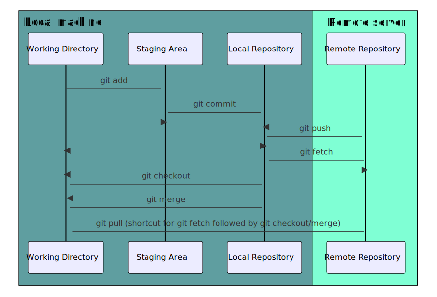
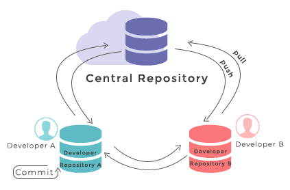
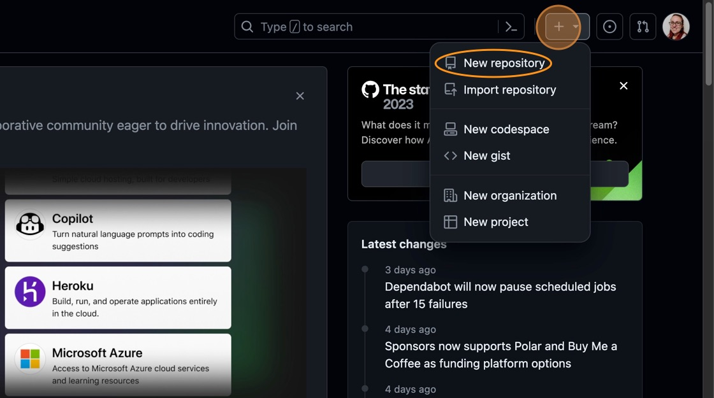
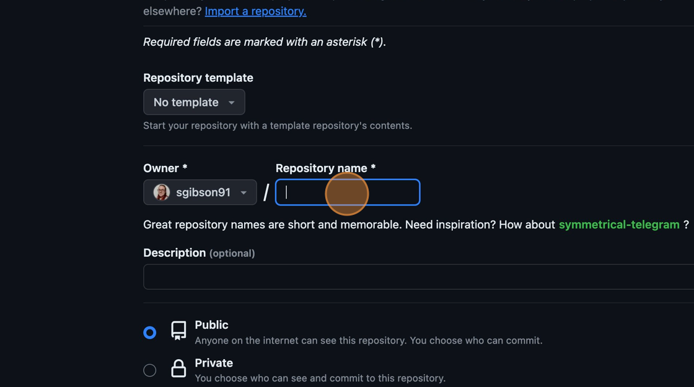
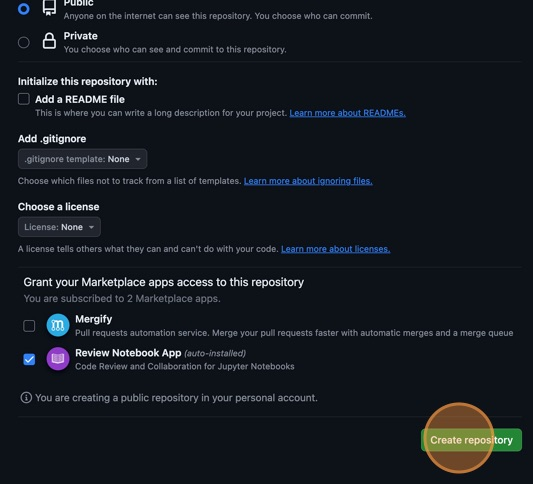
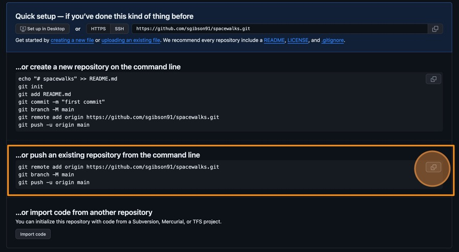

How can a version control system help make my work
reproducible?
What does a standard version control workflow look like?
Objectives
After completing this episode, participants should be able to:
Create self-contained commits using Git to incrementally save
work
Inspect logs to review the history of work
Push new work from a local machine to a remote server
In this episode, we will begin to cover the basics of version control
and explore how this tool assists us in producing reproducible and
sustainable scientific projects. We will create a new software project
from our existing code, make some changes to it and track them with
version control, and then push those changes to a remote server for
safe-keeping.
What is a version control system?
Version control is the practice of tracking and managing changes to
files. Version control systems are software tools that assist in the
management of these file changes over time. They keep track of every
modification to the files in a special database that allows users to
“travel through time” and compare earlier versions of the files with the
current state.
Why use a version control system?
The main motivation as scientists to use version control in our
projects is for reproducibility purposes. As hinted to above, by
tracking and storing every change we make, we can more effectively
restore the state of the project at any point in time. This is
incredibly useful if we want to reproduce results from a specific
version of the code, or track down changes that broke some
functionality.
The other benefit we gain is that version control provides us with
the provenance of the project. As we make each change, we also leave a
message about what the change was and why it was made. This improves the
transparency of the project and makes it auditable, which is good
scientific practice.
Later on in this workshop, we will also see how using a version
control system allows many people to collaborate on the same project
without a lot of manual effort to combine different items of work.
Git version control system
Git is one of the version control systems around and the one we will
be using in this course. It is primarily used for source code management
in software development but it can be used to track changes in files in
general - it is particularly effective for tracking text-based files
(e.g. source code files in any programming language, CSV, Markdown,
HTML, CSS, Tex, etc. files).
The diagram below shows a typical software development lifecycle with
Git (starting from making changes locally) and the commonly used
commands to interact with different parts of the Git infrastructure. We
will cover all of the commands below during this course, this is just a
high level overview.

Software development lifecycle with Git
working directory - a local directory (including
any subdirectories) where your project files live and where you are
currently working. It is also known as the “untracked” area of Git. Any
changes to files will be marked by Git in the working directory. If you
make changes to the working directory and do not explicitly tell Git to
save them - you will likely lose those changes. Using
git add FILENAME command, you tell Git to start tracking
changes to file FILENAME within your working directory.
staging area (index) - once you tell Git to start
tracking changes to files (with git add FILENAME command),
Git saves those changes in the staging area on your local machine. Each
subsequent change to the same file needs to be followed by another
git add FILENAME command to tell Git to update it in the
staging area. To see what is in your working directory and staging area
at any moment (i.e. what changes is Git tracking), run the command
git status.
local repository - stored within the
.git directory of your project locally, this is where Git
wraps together all your changes from the staging area and puts them
using the git commit command. Each commit is a new,
permanent snapshot (checkpoint, record) of your project in time, which
you can share or revert to.
remote repository - this is a version of your
project that is hosted somewhere on the Internet (e.g., on GitHub,
GitLab or somewhere else). While your project is nicely
version-controlled in your local repository, and you have snapshots of
its versions from the past, if your machine crashes - you still may lose
all your work. Furthermore, you cannot share or collaborate on this
local work with others easily. Working with a remote repository involves
pushing your local changes remotely (using git push) and
pulling other people’s changes from a remote repository to your local
copy (using git fetch or git pull) to keep the
two in sync in order to collaborate (with a bonus that your work also
gets backed up to another machine). Note that a common best practice
when collaborating with others on a shared repository is to always do a
git pull before a git push, to ensure you have
any latest changes before you push your own.
Git is a distributed version control system allowing for multiple
people to be working on the same project (even the same file) at the
same time. Initially, we will use Git to start tracking changes to files
on our local machines; later on we will start sharing our work on GitHub
allowing other people to see and contribute to our work.
Create a new repository
Create a new directory in the Desktop folder for our
work, and then change the current working directory to the newly created
one:
BASH
$ cd ~/Desktop$ mkdir spacewalks$ cd spacewalks
We tell Git to make spacewalks a repository – a place
where Git can store versions of our files:
BASH
git init
We can check everything is setup correctly by asking Git to tell us
the status of our project:
BASH
$ git status
OUTPUT
On branch main
No commits yet
nothing to commit (create/copy files and use "git add" to track)
The exact wording of this output may be slightly different if you are
using a different version of Git.
Add initial files into our repository
During the setup for this
course, you have been provided with a .zip archive
containing, among other things, these two code and data files:
my code v2.py
data.json
We need to move these files into our Git folder. You can either drag
and drop the files from a file explorer window into the left pane of the
VS Code IDE, or you can use the mv
command in the command line terminal.
Let’s see what that has done to our repository by running
git status again:
BASH
git status
OUTPUT
On branch main
No commits yet
Untracked files:
(use "git add <file>..." to include in what will be committed)
data.json
my code v2.py
nothing added to commit but untracked files present (use "git add" to track)
This is telling us that Git has noticed the new files. The “untracked
files” message means that there is a file in the directory that Git
isn’t keeping track of. We can tell Git to track a file using
git add:
BASH
$ git add my\ code\ v2.py$ git add data.json
and then check the right thing happened:
BASH
$ git status
OUTPUT
On branch main
No commits yet
Changes to be committed:
(use "git rm --cached <file>..." to unstage)
new file: data.json
new file: my code v2.py
Git now knows that it’s supposed to keep track of
my code v2.py and data.json, but it hasn’t
recorded these changes as a commit yet. To get it to do that, we need to
run one more command:
BASH
$ git commit -m"Add an example script and dataset to work on"
OUTPUT
[main (root-commit) bf55eb7] Add and example script and dataset to work on
2 files changed, 437 insertions(+)
create mode 100644 data.json
create mode 100644 my code v2.py
When we run git commit, Git takes everything we have
told it to save by using git add and stores a copy
permanently in a special .git directory. This permanent
copy is called a commit (or revision).
We use the flag -m (for message) to record a short,
descriptive, and specific comment that will help us remember later on
what we did and why. If we only run git commit without the
-m option, Git will launch a text editor so that we can
write a longer message.
Good commit messages start with a brief (<50 characters) statement
about the changes made in the commit. Generally, the message should
complete the sentence “If applied, this commit will…”. If you want to go
into more detail, add a blank line between the summary line and your
additional notes. Use this additional space to explain why you made
changes and/or what their impact will be.
If we run git status now, we see:
BASH
$ git status
OUTPUT
On branch main
nothing to commit, working tree clean
This tells us that everything is up to date.
Where are my changes?
If we run ls at this point, we will still see only two
files, the script and the dataset. That’s because Git saves information
about files’ history in the special .git directory
mentioned earlier so that our filesystem does not become cluttered (and
so that we cannot accidentally edit or delete an old version).
Make a change
Did you notice how when we were typing the Python script into the
terminal, we had to add a slash before the space like this:
my\ code\ v2.py? Using a backslash in this way is called
‘escaping’ and it lets the terminal know to treat the space as part of
the filename, and not a separate argument. However, it is pretty
annoying and considered bad practice to have spaces in your filenames
like this, especially if you will be manipulating them from the
terminal. So, let’s go ahead and remove the space from the filename
altogether and replace it with an underscore _ instead. You
can use the mv command again like so:
BASH
$ mv my\ code\ v2.py my_code_v2.py
If you run git status again, you’ll see Git has noticed
the change in the filename.
BASH
$ git status
OUTPUT
On branch main
Changes not staged for commit:
(use "git add/rm <file>..." to update what will be committed)
(use "git restore <file>..." to discard changes in working directory)
deleted: my code v2.py
Untracked files:
(use "git add <file>..." to include in what will be committed)
my_code_v2.py
no changes added to commit (use "git add" and/or "git commit -a")
Add and commit the changed file
Using the Git commands demonstrated so far, save the change you just
made to the Python script.
Remember, commit messages should be descriptive and complete the
sentence “If applied, this commit will…”. You can also use
git status to check the status of your project at any
time.
To save the changes to the renamed Python file, use the following Git
commands:
BASH
$ git add my\ code\ v2.py my_code_v2.py$ git status
OUTPUT
On branch main
Changes to be committed:
(use "git restore --staged <file>..." to unstage)
renamed: my code v2.py -> my_code_v2.py
BASH
$ git commit -m"Replace spaces in Python filename with underscores"
OUTPUT
[main 8ea2a0b] Replace spaces in Python filename with underscores
1 file changed, 0 insertions(+), 0 deletions(-)
rename my code v2.py => my_code_v2.py (100%)
Advanced solution
We initially renamed the Python file using the mv
command, and we than had to git addbothmy_code_v2.py and my\ code\ v2.py.
Alternatively, we could have used Git’s own mv command like
so:
BASH
$ git mv my\ code\ v2.py my_code_v2.py$ git status
OUTPUT
On branch main
Changes to be committed:
(use "git restore --staged <file>..." to unstage)
renamed: my code v2.py -> my_code_v2.py
git mv is the equivalent of running mv ...
followed immediately by git add ... of the old and new
filenames, so the changes have been staged automatically. All that needs
to be done is to commit them.
BASH
$ git commit -m"Replace spaces in Python filename with underscores"
OUTPUT
[main 6499bd7] Replace spaces in Python filename with underscores
1 file changed, 0 insertions(+), 0 deletions(-)
rename my code v2.py => my_code_v2.py (100%)
Rename our data and output files
Now that we have seen how to rename files in Git, let’s:
give our input data file and script more meaningful names and
choose informative file names for our output data file and
plot.
First let’s update file names in our script using VS Code.
Now, let’s actually rename our files on the file system using git and
commit our changes.
BASH
git mv data.json eva-data.jsongit mv my_code_v2.py eva_data_analysis.pygit add eva_data_analysis.pygit status
OUTPUT
On branch main
Changes to be committed:
(use "git restore --staged <file>..." to unstage)
renamed: data.json -> eva-data.json
renamed: my_code_v2.py -> eva_data_analysis.py
Finally, let’s commit out changes:
BASH
git commit -m"Implement informative file names"
Commit messages
We have already met the concept of commit messages when we made and
stored changes to our code files. Commit messages are short descriptions
of, and the motivation for, what a commit will achieve. It is therefore
important to take some time to ensure these commit messages are helpful
and descriptive, as when work is reviewed (by your future self or a
collaborator) they provide the context about what changes were made and
why. This can make tracking down specific changes in commits much
easier, without having to inspect the code or files themselves.
Generally, commit messages should complete the sentence “If applied,
this commit will…”. Most often a short, 50 character (ish) title will
suffice, but a longer-form description of the changes can also be
provided by leaving a blank space between the summary line and the rest
of the message. There are many different conventions that can be used
for commit messages that range from very structured (such as conventional
commits) to the fun (such as gitmoji). The important thing is that it
is clear to the reader what a commit is doing and why. If a project is
using a specific commit message convention, this will often be described
in their contributing
guidelines.
Good commit messages
Read the two commit messages below. In pairs or small groups, discuss
which messages help you understand more about what the commit author
did. What about the commit messages do you find helpful or not?
[main 8baf69d] Change variable name from columns to column_headers
1 file changed, 1 insertion(+), 1 deletion(-)
Commit message (2) is the better commit message since it is more
descriptive about what the author did. This message could be improved
further by adding a blank line then further describing the change
discussing, for example, why the variable name was changed.
Self-contained commits
If we want our commit messages to be descriptive and help us
understand the changes in the project over time, then we also have to
make commits that are very self-contained. That is to say that each
commit we make should only change one, logical thing. By “logical” here,
we mean that one aspect of updating the files has been achieved to
completion - such as adding docstrings or refactoring a function - we
don’t mean that changes are committed line-by-line. See the “Things
to avoid when creating commits” section of Openstack’s
“Git Commit Good Practice” documentation for examples of logical,
self-contained commits, and commits that don’t follow this practice.
The reasons that self-contained commits are important are that: it
helps with reviewing changes if each commit tackles one step; if code
breaks, tracking down the specific change that caused the break is
simpler; if you need to undo changes, you can remove them in small
increments, rather than losing a lot of unrelated work along with the
change you do want to remove.
Understanding commit contents
Below are the diffs of two commits. A diff
shows the differences in a file (or files!) compared to the previous
commit in the history so you can what has changed. The lines that begin
with +s represent additions, and the lines that begin with
-s represent deletions. Compare these two commit
diffs. Can you understand what the commit author was trying
to achieve in each commit? How many changes have they tried to make in
each commit? Discuss in pairs or small groups.
The git diff presented in option (1) is cleaner. The
author has only tackled one thing: placing the import statements at the
top of the file. This kind of commit is much easier to review in
isolation, and will be easier to track down if git bisect
is required.
Git logs
If we want to know what we’ve done recently, we can ask Git to show
us the project’s history using git log:
BASH
$ git log
OUTPUT
commit 6499bd731ab50fde2731ce2642f143cea86450b6 (HEAD -> main)
Author: Sarah Gibson <drsarahlgibson@gmail.com>
Date: Mon Jun 17 11:55:17 2024 +0100
Replace spaces in Python filename with underscores
commit bf55eb7639a6508658aaa1bfeaeb9f115d1bcc40
Author: Sarah Gibson <drsarahlgibson@gmail.com>
Date: Mon Jun 17 11:52:02 2024 +0100
Add and example script and dataset to work on
This output demonstrates why it is important to write meaningful and
descriptive commit messages. Without the messages, we will only have the
commit hashes (the strings of random numbers and letters after “commit”)
to identify each commit, which would be impossible for us.
We may need to inspect our recent commits to establish where a bug
was introduced or because we have decided that our recent work isn’t
suitable and we wish to discard it and start again. Once we have
identified the last commit we want to keep, we can revert the state of
our project back to that commit with a few different methods:
git revert:
This command reverts a commit by creating a new commit that reverses the
action of the supplied commit or list of commits. Because this command
creates new commits, your Git history is more complete and tells the
story of exactly what work you did, i.e., deciding to discard some
work.
git reset:
This command will recover the state of the project at the specified
commit. What is done with the commits you had mave since is defined by
some optional flags:
--soft: Any changes you have made since the specified
commit would be preserved and left as “Changes to be committed”
--mixed: Any changes you have made since the specified
commit would be preserved but not marked for commit (this is the default
action)
--hard: Any changes you have made since the specified
commit are discarded.
Using git reset command produces a “cleaner” history,
but does not tell the full story and your work.
Interacting with a remote Git server
Git is also a distributed version control system, allowing us to
synchronise work between any two or more copies of the same repository -
the ones that are not located on your machine. So far we have have been
working with a project on our local machines and, even though we have
been incrementally saving our work in a way that is recoverable (version
control), if anything happened to our laptops, the whole project would
be lost. However, we can use the distribution aspect of Git to push our
projects and histories to a server (someone else’s computer) so that
they are accessible and retrievable if the worst were to happen to our
machines.

Git - distributed version control system, image
from W3Docs (freely available)
GitHub is an online software
development platform that can act as a central remote server. It uses
Git underneath and provides facilities for storing, tracking, and
collaborating on software projects. Other Git hosting services are
available, such as GitLab and Bitbucket.
Distributing our projects in this way also opens us up to
collaboration, since colleagues would be able to access our projects,
make their own copies on their machines, and conduct their own work.
We will now go through how to push a local project on GitHub and share it publicly.
In your browser, navigate to https://github.com and sign into your account
In the top right hand corner of the screen, there is a menu
labelled “+” with a dropdown. Click the dropdown and select “New
repository” from the options.

Creating a new GitHub repository
You will be presented with some options to fill in or select
while creating your repository. In the “Repository Name” field, type
“spacewalks”. This is the name of your project and matches the name of
your local folder.

Naming the GitHub repository
Ensure the visibility of the repository is “Public” and leave all
other options blank. Since this repository will be connected to a local
repository, it needs to be empty which is why we don’t initialise with a
README or add a license or .gitignore file. Click “Create
repository” at the bottom of the page.

Complete GitHub repository
creation
Now you have created your repository, you need to send the files
and the history you have stored on your local computer to GitHub’s
servers. GitHub provides some instructions on how to do that for
different scenarios. You want to use the instructions under the heading
“…or push an existing repository from the command line”. These
instructions will look like this:
You can copy these commands using the button that looks like two
overlapping squares to the right-hand side of the commands. Paste them
into your terminal and run them.

Copy the commands to sync the local and
remote repositories
If you refresh your browser window, you should now see the two
files my-code-v2.py and data.json visible in
the GitHub repository, matching what you have locally on your
machine.
Let’s explain a bit more about what those commands did…
This command tells Git to create a remote called
“origin” and link it to the URL of your GitHub repository. A
remote is a version control concept where two (or more)
repositories are connected to each other in such a way that they can be
kept in sync by exchanging commits. “origin” is a name used to refer to
the remote repository. It could be called anything, but “origin” is a
convention that is often used by default in Git and GitHub since it
indicates which repository is considered the “source of truth”,
particularly useful when many people are collaborating on the same
repository.
BASH
git branch -M main
git branch is a command used to manage branches. We will
discuss branches later on in the course. This command ensures the branch
we are working on is called “main”. This will be the default branch of
the project for everyone working on it.
BASH
git push -u origin main
The git push command is used to update remote references
with any changes you have made locally. This command tells Git to update
the “main” branch on the “origin” remote. The -u flag
(short for --set-upstream) will set a tracking reference,
so that in the future git push can be run without the need
to specify the remote and reference name.
Terminology
In pairs or small groups, discuss the difference between the terms
remote and origin. What is the definition of
each term?
remote: a version control concept where two (or more)
repositories are linked together in such a way that they can be kept in
sync by exchanging commits
origin: a common Git/GitHub naming convention for the
remote repository to designate the source of truth for
collaborators
Summary
During this episode, we have covered the basics of using version
control to track changes to our projects. We have seen how to: create
new projects, incrementally save progress, construct informative commit
messages and content, inspect the history of our projects and retrieve
the state, and push our projects to distributed servers.
These skills are critical to reproducible and sustainable science
since using version control makes our work self-documenting - the commit
messages provide the narrative of what changed and why - and we can
recover the exact state of our projects at a specific time, so we can
more reliably run the “same” code again. We can also back up our
projects by pushing them to distributed, remote servers and reduce the
risk of data loss over the course of a project’s lifetime.
Version control is a vast topic and we have only covered the absolute
basics here as a brief introduction. For a deeper and more complete dive
into the subject matter, please see the “Further reading” section
below.
Further reading
We recommend the following resources for some additional reading on
the topic of this episode: